Usulan sistem pencatatan produksi mill yang real-time, tidak bisa diubah diam-diam, dan bisa diaudit.
Alur produksi crude oil di site berjalan lewat delapan titik pencatatan manual. Setiap titik berpotensi menjadi tempat data melenceng dari kondisi sebenarnya — dan sejauh ini tidak ada satu pun yang tercatat otomatis.
Kuota 22–25% CPO dari raw material diberlakukan sebagai target harian yang kaku. Saat hasil aktual di bawah itu, tekanan bergeser ke personel site untuk "menyesuaikan" angka.
Selama laporan masih checksheet manual yang direkap belakangan, HQ selalu bereaksi terhadap kejadian yang sudah lewat.
Audit sistem eksisting — ERP, SCADA, software timbangan.
Integrasi timbangan, dashboard live, dan alert.
Sensor level dan flowmeter menutup celah ukur manual.
Traceability EUDR penuh dan analitik prediktif.
Bingkai sebagai "gap visibilitas data dan risiko audit" — bukan tuduhan ke personel tertentu.
Temuan dari satu narasumber, satu site. Perlu sumber pembanding sebelum diklaim sistemik.
Grup sebesar ini mungkin sudah punya ERP/SCADA — discovery perlu memastikan tidak tumpang tindih.
Personel yang biasa menyesuaikan angka kemungkinan menolak — perlu sponsor level atas.
Sinyal di site sering tidak stabil — arsitektur perlu mode offline dengan sinkronisasi.
Kemungkinan dibutuhkan hosting on-premise/private cloud plus audit keamanan.
Kuota tetap sama — yang berubah adalah kejujuran datanya.
